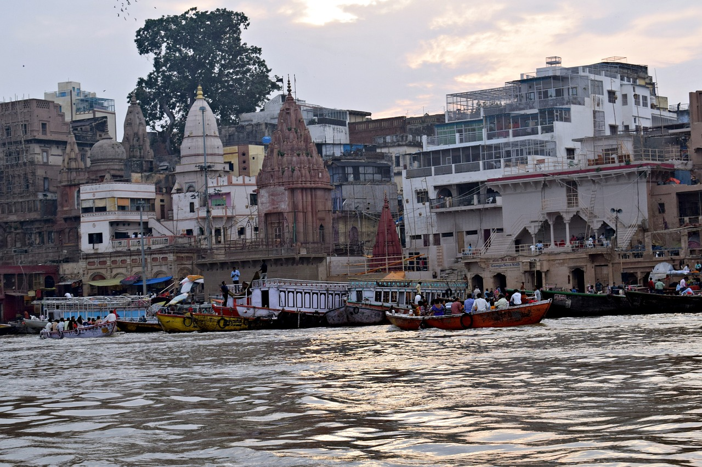

Discover India: A Journey through Diversity and Culture
South Asian nation of India is formally known as the Republic of India. India is known for its ancient heritage, exciting festivals, diverse landscapes, and rich history spanning thousands of years. India offers tourists a wide range of experiences, from spiritual treks to daring escapades and cultural discoveries, from the snow-capped Himalayas in the north to the tropical beaches of the south.
Geographical Diversity
India's geographical landscape is incredibly diverse, encompassing:
Himalayas: The Himalayas are the highest mountain range in the world, spanning northern India and featuring peaks such as Mount Everest and Kanchenjunga.
Indo-Gangetic Plain: The Ganges, Brahmaputra, and their tributaries formed the lush Indo-Gangetic Plain, which stretches across a large portion of northern and eastern India.
Thar Desert: The largest desert in India, the Thar Desert is situated in Rajasthan and is distinguished by its sand dunes, forts, and rich cultural customs.
Western and Eastern Ghats: The Western and Eastern Ghats are mountain ranges that are noted for their biodiversity and picturesque scenery. They run parallel to the western and eastern coasts of India, respectively.
Coastline: India has a coastline that stretches over 7,500 kilometers (4,660 miles), offering historical ports, mangrove forests, and tropical beaches along the Indian Ocean, Bay of Bengal, and Arabian Sea.
Climate Zones
India experiences a variety of climatic conditions:
Tropical Monsoon: With distinct wet (monsoon) and dry seasons, the majority of India experiences a tropical monsoon environment. Agriculture depends on the substantial rainfall that the southwest monsoon (June to September) brings.
Desert Climate: The Thar Desert and certain regions of Gujarat have torrid summers and little precipitation.
Mountain Climate: The Himalayan region has frigid winters and nice summers in the lower valleys due to its alpine and subalpine temperatures.
Cultural Heritage
India's historical legacy is reflected in its numerous monuments and UNESCO World Heritage sites:
Taj Mahal
Qutub Minar
Taj Mahal: The Taj Mahal is an Agra mausoleum made of white marble that represents both timeless love and magnificent architecture.
Qutub Minar: An imposing minaret in Delhi that displays Indo-Islamic architecture and dates to the 12th century.
Khajuraho Temples:Khajuraho Temples Located in Madhya Pradesh, these temples are renowned for their elaborate, sensual sculptures and Nagara-style architecture.
Spiritual Centers
India is a land of spiritual enlightenment and pilgrimage sites:

Varanasi
Golden Temple (Harmandir Sahib)
Varanasi: Situated on the banks of the Ganges River, Varanasi is one of the oldest continuously inhabited cities in the world and is well-known for its ghats and religious activities.
Golden Temple (Harmandir Sahib): The holiest Sikh temple in Amritsar, the Golden Temple (Harmandir Sahib), is well-known for its golden construction and communal kitchen (langar).
Cultural Festivals
India celebrates a multitude of festivals throughout the year, showcasing its cultural diversity:
Diwali: Diwali is a celebration of lights that represents the triumph of good over evil.
Holi: The festival of colors, a colorful celebration that heralds the entrance of spring.
Durga Puja: Mainly observed in West Bengal, this festival honors the goddess Durga with elaborate processions and artistic displays.
Natural Beauty
India offers breathtaking vistas and adventure opportunities:
Himalayan Landscapes: The Himalayas offer breathtaking vistas and adventure opportunities such as Leh-Ladakh and the Valley of Flowers.
Coastal Charms: India's coastline is dotted with pristine beaches and cultural gems such as Goa and Kerala.
Wildlife Sanctuaries: India is home to diverse wildlife and protected habitats like Jim Corbett National Park and Ranthambore National Park.
Cuisine
Indian cuisine is a culinary delight known for its spices and regional specialties:
North Indian Cuisine: North Indian food consists of flavorful curries, tandoori foods, and breads like paratha and naan.
South Indian Cuisine: Idli, dosa, seafood specialties, and flavorful rice dishes are all part of South Indian cuisine.
Practical Information
For travelers planning to visit India, it's essential to consider:
Visa and Entry Requirements: Tourist visas are usually required for entry into India and can be obtained online or through Indian embassies.
Transportation: India offers various transportation options including railways, flights, and roadways.
Accommodation: India offers a range of accommodations from hotels to homestays and heritage properties.
India is a nation of contrasts, where bustling cities coexist with stunning natural scenery and old customs with contemporary goals. Whether seeing historical sites, going on animal safaris, unwinding on sun-kissed beaches, or sampling a variety of cuisines, India ensures that every visitor will have an enlightening and remarkable experience.


.jpg)